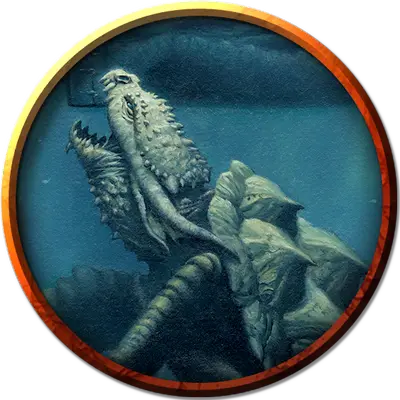

Бронзифьюм
Bronzefume
Громадный Дракон, нейтральный, именной НИП

Класс Доспеха 20 (природный доспех)
Хиты 220 (22к20 + 110)
Скорость 20 футов, плавая 40 футов
| мод | спас | ||
|---|---|---|---|
| СИЛ | 25 | +7 | +7 |
| ЛОВ | 10 | +0 | +6 |
| ТЕЛ | 20 | +5 | +11 |
| мод | спас | ||
|---|---|---|---|
| ИНТ | 10 | +0 | +0 |
| МДР | 12 | +1 | +7 |
| ХАР | 12 | +1 | +1 |
Сопротивление урону огонь
Чувства тёмное зрение 120 футов, пассивное Восприятие 11
Языки Акван, Драконий
Опасность 13 (10000 опыта)
Бонус мастерства +5
Особенности
Амфибия. Бронзифьюм может дышать и воздухом и под водой.
Действия
Мультиатака. Бронзифьюм совершает три атаки: одну укусом, и две когтями. Она может совершить одну атаку хвостом вместо двух атак когтями.
Укус. Рукопашная атака оружием:+13 к попаданию, досягаемость 15 футов, одна цель. Попадание: Колющий урон 26 (3к12 + 7).
Коготь. Рукопашная атака оружием: +13 к попаданию, досягаемость 10 футов, одна цель. Попадание: Рубящий урон 16 (2к8 + 7).
Хвост. Рукопашная атака оружием: +13 к попаданию, досягаемость 15 футов, одна цель. Попадание: Дробящий урон 26 (3к12 + 7). Если цель — существо, она должна преуспеть в спасброске Силы Сл 20, иначе будет оттолкнута на 10 футов от Бронзифьюма и сбита с ног.
Паровое дыхание (перезарядка 5–6). Бронзифьюм выдыхает обжигающий пар 60-футовым конусом. Все существа в этой области должны совершить спасбросок Телосложения Сл 18, получая урон огнём 52 (15к6) при провале, или половину этого урона при успехе. Нахождение под водой не даёт сопротивления этому урону.
Описание
В озере живет самый грозный союзник культа Сокрушающей Волны: молодая и впечатлительная дракочерепаха по имени Бронзифьюм. Гар Шаттеркил заманил её в ряды культа, пообещав невиданные богатства. Ожидая, когда пророк воды решит, что настало время захватить контроль над рекой, Бронзифьюм скрывается под водой в западной части озера.
В первую очередь Бронзифьюм будет атаковать лодки, а не людей. Между нападением на персонажа и на лодку с персонажем, она выберет лодку. На то, чтобы уничтожить небольшой ялик, она тратит действия в течение 1к4 раундов, во время которых она игнорирует отступающих персонажей.
Если на её половине озера появляется лодка, Бронзифьюм всплывает, чтобы посмотреть на неё.
Также она откликнется на удар гонга в области С22. Дракочерепаха нападёт лишь в том случае, если будет абсолютно уверена, что имеет дело с врагами культа, например, если увидит, как культисты воды сражаются с персонажами.
Дракочерепахи являются одними из самых страшных существ в океане. Настолько же большие и прожорливые, как и их наземные родичи драконы, дракочерепахи сокрушают своими смертельными челюстями, паровым дыханием и сокрушительным хвостом.
Грубый панцирь дракочерепахи имеет такой же тёмно-зелёный цвет, как и глубокая вода, в которой обитает это чудовище. Серебряные прожилки, подчёркивающие панцирь, напоминают танец света на открытой водной глади, а всплывшую дракочерепаху иногда принимают за отражение солнца или луны на волнах.
Драконы глубин. Как и истинные драконы, дракочерепахи собирают сокровища, сначала топя корабли, и затем просеивая обломки в поисках монет и других драгоценных предметов. Дракочерепахи заглатывают сокровища для транспортировки, а затем срыгивают их, когда добираются до логова.
Дракочерепахи обитают в пещерах, скрытых в коралловых рифах или под морским дном, либо вдоль скалистых участков береговой линии. Если приглянувшаяся пещера уже заселена, дракочерепаха нападает на её нынешних обитателей в попытке захватить пещеру.
Наёмные чудовища. Дракочерепахи достаточно умны, чтобы их можно было подкупить, и пираты, ходящие под парусом по морям, патрулируемым этими существами, быстро учатся предлагать им сокровища в обмен на безопасный проход. Умные сахуагины иногда объединяются с дракочерепахами, соблазняя их сокровищами, чтобы использовать их обжигающее дыхание в качестве оружия в набегах сахуагинов на корабли и прибрежные поселения.
Стихийная мощь. Дракочерепахи иногда проходят через подводные разрывы в планах на Стихийный План Воды. Эти чудовищные экземпляры можно найти на службе маридов, которые крепят на спинах дракочерепах величественные коралловые троны и ездят на них, как на ездовых животных.